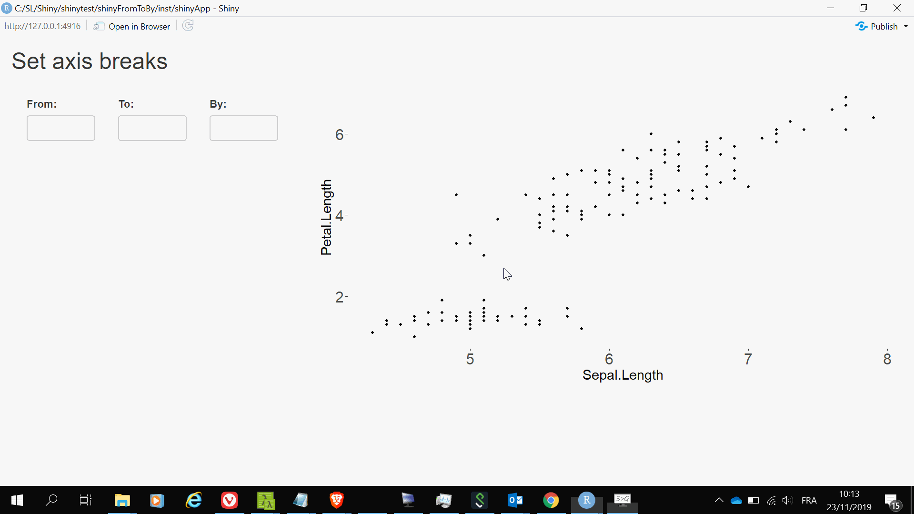

A shinytest script in testthat
Posted on November 23, 2019
by Stéphane Laurent
The shiny app
Here is a simple shiny app:
library(shiny)
library(ggplot2)
# UI ####
ui <- fluidPage(
titlePanel("Set axis breaks"),
sidebarLayout(
# sidebar ####
sidebarPanel(
fluidRow(
column(
width = 4,
numericInput("from", "From:", value = NULL)
),
column(
width = 4,
numericInput("to", "To:", value = NULL)
),
column(
width = 4,
numericInput("by", "By:", value = NULL)
)
)
),
# main panel ####
mainPanel(
plotOutput("ggplot")
)
)
)
# SERVER ####
server <- function(input, output) {
FromToBy <- reactiveVal()
observe({
breaks <- tryCatch({
seq(input[["from"]], input[["to"]], input[["by"]])
}, error = function(e) NULL)
FromToBy(breaks)
})
scatterplot <- reactive({
gg <- ggplot(iris, aes(Sepal.Length, Petal.Length)) + geom_point()
if(!is.null(FromToBy())){
gg <- gg + scale_y_continuous(breaks = FromToBy())
}
gg + theme(
axis.text = element_text(size = 20),
axis.title = element_text(size = 18)
)
})
output[["ggplot"]] <- renderPlot({
scatterplot()
})
observe({ # this is for shinytest - see later ####
req(scatterplot())
ggg <- ggplot_build(scatterplot())
exportTestValues(panelParams = ggg$layout$panel_params[[1L]])
})
}
# Run the application ####
shinyApp(ui = ui, server = server)It allows to set the breaks of the y-axis of the graph:

Unit test
Say we want to test whether the app correctly sets the axis breaks.
When you have a ggplot, you can get the y-axis breaks as follows:
library(ggplot2)
gg <- ggplot(iris, aes(Sepal.Length, Petal.Length)) + geom_point()
ggg <- ggplot_build(gg)
ggg$layout$panel_params[[1L]][["y.major_source"]]
## [1] 2 4 6With this piece of code of the app:
observe({ # this is for shinytest - see later ####
req(scatterplot())
ggg <- ggplot_build(scatterplot())
exportTestValues(panelParams = ggg$layout$panel_params[[1L]])
})we export ggg$layout$panel_params[[1L]].
Assume our package is named shinyFromToBy and the shiny app is saved in file app.R in the inst/shinyApp folder. Then, here is our unit test (to put in the tests/testthat folder):
context("y-axis breaks")
test_that("y-breaks are correct", {
skip_if_not_installed("shinytest")
library(shinytest)
app <- ShinyDriver$new(
system.file("shinyApp", package = "shinyFromToBy"),
loadTimeout = 1e+05,
shinyOptions = list(test.mode = TRUE)
)
app$setInputs(from = 1)
app$setInputs(to = 7)
app$setInputs(by = 0.5)
panelParams <- app$getAllValues()$export[["panelParams"]]
expect_identical(
panelParams[["y.major_source"]],
seq(1, 7, by = 0.5)
)
app$stop()
})